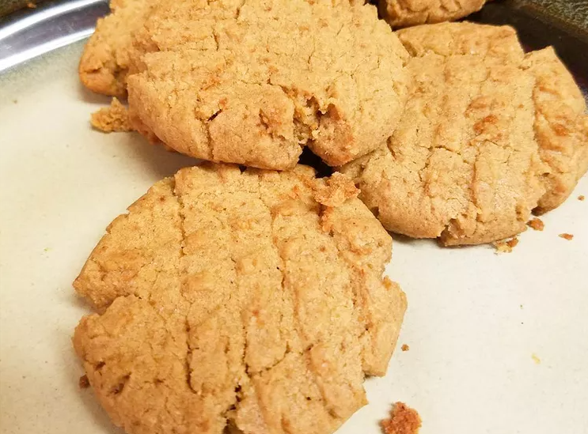

Peanut Butter Cookies

Description
Enjoy the irresistible taste of homemade peanut butter cookies.
These soft and chewy treats feature the perfect blend of creamy peanut butter,
delivering a comforting and delightful experience.
Share them with loved ones or savor them alongside a glass of milk for a simple yet satisfying snack.
Ingredients
- ½ cup shortening
- ½ cup crunchy peanut butter
- ½ cup white sugar
- ½ cup packed brown sugar
- 1 large egg
- 1 ¼ cups all-purpose flour, plus more as needed
- ¾ teaspoon baking soda
- ½ teaspoon baking powder
- ¼ teaspoon salt
Directions
- Cream shortening, peanut butter, and both sugars in a large bowl with an electric mixer until light and fluffy.
- Beat in the egg until incorporated.
- Mix flour, baking soda, baking powder, and salt in a separate bowl; gradually stir into peanut butter mixture until combined.
- Cover and refrigerate the dough for at least 1 hour.
- Preheat the oven to 375 degrees F (190 degrees C).
- Roll chilled dough into walnut-sized balls and place them 2 inches apart onto baking sheets.
- Flatten dough balls with a fork dipped in flour to form a crosswise pattern.
- Bake in the preheated oven until the edges are set, 10 to 12 minutes.
- Transfer cookies to a wire rack to cool completely.